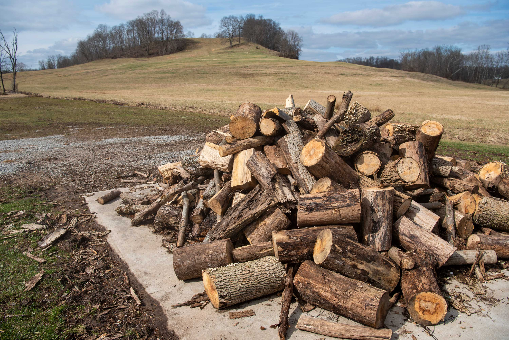

An electric blue tractor rumbles up a gently winding country road, carrying an elderly man, his dog, and an empty trailer.
Among the rolling hills of Albany, Ohio, Charles Chase is making the three-minute journey from his home to his family’s farm. Halfwaythrough the route, he takes his usual detour. The tractor wheels, caked in mud and woodchips, roll to a stop. Chase pulls the clutch of the tractor into park and Oliver, his nine-year-old Yorkshire Terrier, hops down from his lap. To their right, four bales of hay sit on the side of the road, a mirror image of the bales waiting for Chase at his farm.
.jpg)
Charles Chase ties his shoes as he gets ready to drive a tractor near Albany, OH, on March 8, 2022. He drives from his home to the property where he grew up, less than a mile down the road, to pick up some bales of hay.
The old Chase Church sits on a hill near Albany, OH, on March 8, 2022.
To the left of the bales stands an old white church with a freshly painted green roof. Above the doorway, a sign reads: “Chase Baptist Church, 1833”. Olivertrots around the side of the church and across the cemetery. As his pup weaves between the crumbling headstones of Chase family ancestors, Chase gingerly strides to the newest grave; his late wife Helen’s. “She was a good woman,” he said. An image of the Chase Farm is engraved on the headstone. One would only need to lift their gaze just beyond the headstone to see the farm for themselves, about a half-mile down the hill, on Chase Road.
Charles Chase visits his wife’s grave near Albany, OH, on March 8, 2022. Helen passed away in 2016. This cemetery contains many of his ancestors’ graves, and it sits behind a church that was once owned by and named after his family. He drives past this church on the short trip between his home and the farm he grew up on. An image of the Chase Farm is engraved on the headstone, as well as his name; he will be buried next to her when he passes.
Chase, 83, is a hay farmer in Southeast Ohio. He starts the day with his favorite vices—coffee and cigarettes. In the Spring, he drives his tractor to the farm, loads hay bales onto his trailer, and delivers hay to some of his neighbors. When not working, he builds chests out of local wood in his woodshop.
Charles Chase examines an old maple syrup tap in his maple syrup shed near Albany, OH, on March 8, 2022. Charles and his son normally tap many trees on his properties but, due to scheduling conflicts, they did not tap this year.

A pile of wood sits next to Charles Chase’s wood stove that heats his home near Albany, OH, on March 8, 2022.
An axe and some wood sit in Charles Chase’s garage near Albany, OH, on March 8, 2022. Charles converted his garage into a woodworking space, and he makes wooden chests out of local wood.
Chase has worked on his family’s land his whole life, as did his father. His family operated a hay and dairy farm on Chase Road for many generations. John Merrill Chase, Charles Chase’s great-great-great-grandfather, settled in Alexander Township in 1815 andChase descendants have worked on the farm ever since. The barn that currently sits on the property was built in 1887, and the house on the property was built in 1890.
A barn that was built in 1887 stands on Charles Chase’s family’s property near Albany, OH, on March 8, 2022. Charles’ family has lived and worked on this land for many generations.
“It’s four bricks thick, like a fortress,” says Chase, referencing his childhood home. He claimed his family made these bricks themselves out of local clay. The land owned by the Chase Family used to extend much further into the surrounding hills, but was sold off over the generations. Chase claims there used to be a City of Chase. It included a company store, a creamery, and the Chase Baptist Church. Charles Chase and his wife Helen were married in Chase Baptist Church in 1958. They moved into an old farmhouse about a mile away from the farmhouse where he grew up. Together, the couple raised three “wonderful” kids together; Carol, Linda, and David. “They take care of me so good,” Chase said.
The Chase kids have supported their father through some tragic years. Helen Chase died in 2016, and a year later, a space heater ignited a fire that burned much of their home to the ground. Chase lost many family historical documents, photos, and heirlooms in the blaze, including his antique gun collection.

Charles Chase points to a painting of the old house that he lived in before a fire destroyed it in 2017, a year after his wife passed away. He managed to save a handful of belongings, but lost a great deal of family heirlooms and family history. Charles, his three children, and their families, rebuilt the house on the same land and he lives there to this day
Charles Chase shows his only remaining antique pistol in his possession in his bedroom near Albany, OH, on March 8, 2022. In 2017, the farmhouse he had lived in for over 40 years burned down after a furnace got out of control. Out of his collection of around 60 antique guns, this pistol was the only one that was saved. He plans to give it to one of his grandsons when he passes away.
Although he lives alone, Chase is not lonely. His daughters visit often and clean for him.They live in homes less than a mile away, and his son lives part-time on the old family property. When his father passed away in 1997, Chase decided to gift all of his land to his kids. “I don’t own anything,” Chase said. “I’m just squattin’ here.” However, he still operates the entire 290-acre farm by himself. He has no employees, because he knows he can work those fields better than anyone else.
“I know where all the rocks are, the slips too,” said Chase. His son helps out when he can, but he alsoruns a few business ventures of his own. “My son is so busy, I do it all myself,” Chase said. As his health declines, he fears that the family business will come to an end after he passes, ending a long line of dutiful tradition.
Charles Chase rides his tractor near Albany, OH, on March 8, 2022

Charles Chase carries bales of hay on a tractor on his family’s property near Albany, OH, on March 8, 2022. Generations of his family have lived on this property, and he has grown up working on this land. However, although he still runs the hay farm operations all himself, Charles gifted his land to his son for tax purposes several years ago. “I don’t own anything,” Charles said. “I’m just squatting here.”
Chase said he used to have cattle, but he sold them about 20 years ago. Since then, he has had a hard time selling off all his hay. He mainly sells to neighbors with livestock. There used to be more small farms nearby, but many have disappeared over the years. Today, there are only a handful of farms in the area that have livestock but lack their own hay supply.
“Farming has changed”
He claims that many families have taken over the land where these small farms used to be. “They’re good people but they’re not farmers,” he said. Standing in the cemetery, Chase breaks his gaze from the brightly painted stones resting at the base of the newest Chase headstone. Written on one of the stones is the phrase, “Missing you, best Mom ever.” Just above, next to Helen’s name, Chase’s name is already engraved; he will be buried next to her when he passes, perhaps the last of his family to be buried in the Chase Baptist Church cemetery.
Charles Chase rides his tractor past a church that used to be named after his family near Albany, OH, on March 8, 2022. The cemetery behind this church holds the graves of many of his ancestors and family, including his wife’s.